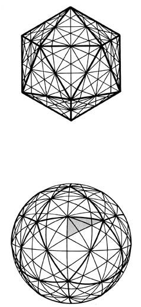

|  |
| Fig. 457.30B Projection of 31 Great-Circle Planes in Icosahedron System: The complete icosahedron system of 31 great-circle planes shown with the planar icosahedron as well as true circles on a sphere (6+10+15=31). The heavy lines show the edges of the original 20-faced icosahedron. |